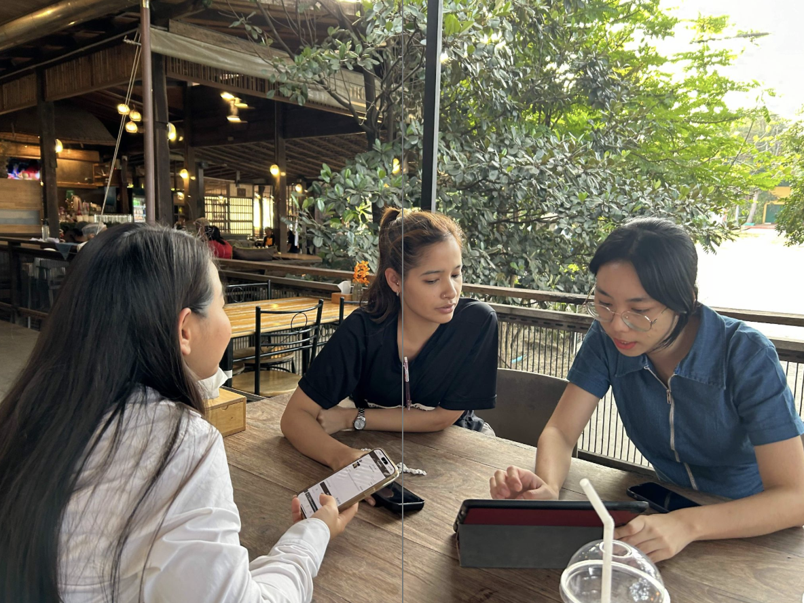
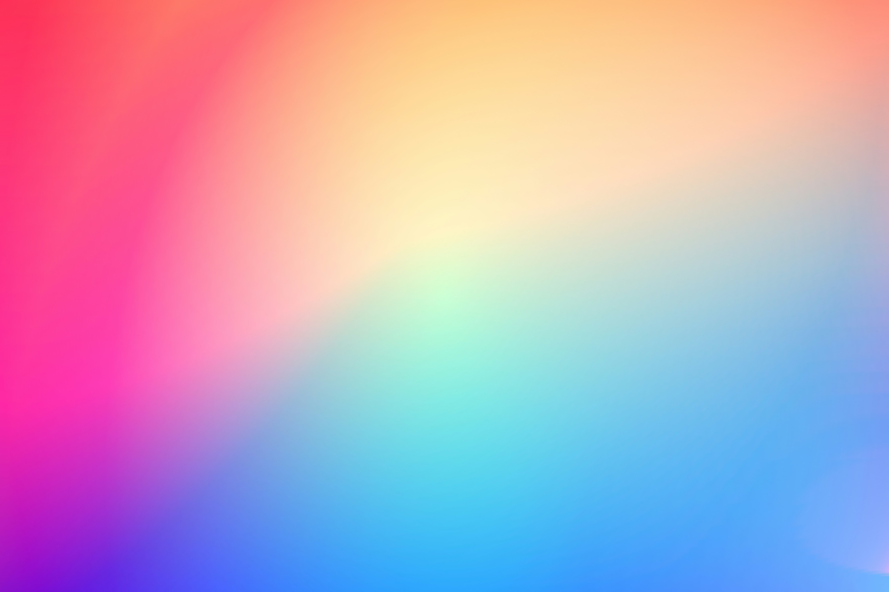

บริษัทที่เคยร่วมงาน


สวัสดี ฉันราศี — Lead Product Designer และ UX Engineer ที่ดูแลงานออกแบบตั้งแต่แนวคิดจนถึงส่งมอบ โฟกัสที่ปัญหาผู้ใช้ เป้าหมายธุรกิจ และผลลัพธ์ที่วัดได้
Experience
ฉันวางแผนและบริหารจัดการโครงการตั้งแต่เริ่มต้น โดยคำนึงถึงกรอบเวลาและขอบเขตงาน อีกทั้งสามารถรับมือกับปัญหาหลายระดับและแก้ไขได้ด้วยข้อมูลที่แม่นยำผ่านการทดสอบเชิงแนวคิด




End-to-end product design — strategy, IA, user flows, and prototyping that turn research into shipped product across mobile, web, and enterprise.
Mixed-methods research — interviews, usability tests, journey mapping, and competitive analysis grounded in measurable evidence.
Visual hierarchy, typography, color systems, and pixel-precise interfaces — production-ready across mobile, web, and dashboard.
Prototyping in Figma and rendering it in CSS, HTML, React, and other languages while writing code in real-time can reduce actual development time by up to 10 times.
Planning, scoping, and timeline ownership — keeping cross-functional teams aligned and shipping within agreed deadlines.
Portfolio
ผลงานจริงที่ส่งมอบแล้ว ครอบคลุมทั้งการเงิน ธนาคาร ธุรกิจบริการ และโลจิสติกส์ แต่ละโครงการเริ่มต้นจากการวิจัยและโจทย์ที่ซับซ้อน ไปสู่อินเทอร์เฟซที่เรียบง่ายและผ่านการทดสอบ ซึ่งขับเคลื่อนตัวชี้วัดที่สำคัญได้จริง

A QR code menu for scanning and ordering, with real-time kitchen queuing, enabling comprehensive restaurant management.
A modular analytics dashboard for SME lending operations — research-led IA, accessible data viz, design tokens.

A mobile banking app — secure authentication, real-time transfers, and account management. Designed for everyday transactions with a clear, low-friction flow.

The delivery app is designed for fast and convenient ordering, offering specified delivery times and ensuring fresh, high-quality products daily.

An OCR-powered document intelligence platform — automated text extraction, smart classification, and structured data output. Designed to turn high-volume paperwork into searchable, actionable records.
เกี่ยวกับฉัน
ด้วยประสบการณ์ของฉันในฐานะนักออกแบบและพัฒนาดิจิทัลโปรดัคส์ที่มีมากกว่า 9 ปี ทำให้เข้าใจการทำงานในหลากหลายธุรกิจ โดยการนำเอาวิธีคิดที่สำคัญต่อการพัฒนามาประยุกต์ใช้และต่อยอดเพื่อปรับใช้ให้เหมาะสมกับธุรกิจต่างๆ รวมถึงการจัดการภายในทีม การแก้ปัญหาเฉพาะหน้า การตัดสินใจด้วยสถิติที่ชัดเจน เพื่อมุ่งเน้นไปยังเป้าหมายการพัฒนาผลิตภัณฑ์ให้ตรงกับความต้องการและคุ้มค่าต่อการลงทุน
ติดต่อที่นี่
พร้อมให้คำปรึกษาด้านการออกแบบผลิตภัณฑ์ หรือทำงานร่วมกันเป็นทีม — มาสร้างสรรค์สิ่งดีๆ ด้วยกัน!